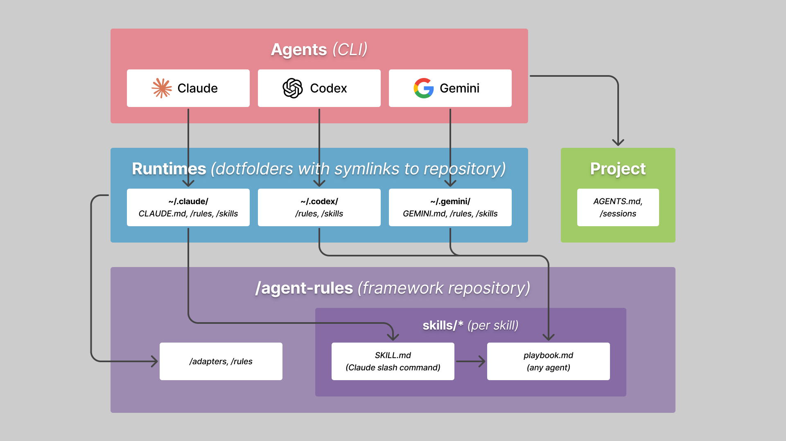

I design services and experiences by connecting user research with business strategy. My focus is on understanding how people actually behave (through research, metrics, and testing) and using that to make better design decisions.
Over 20 years I've worked across government, finance, health, and tech: leading products end-to-end for Argentina's national government digital services, designing the full banking experience for senior citizens at Banco Macro, building design systems at scale, and creating one of the first health-focused conversational experiences for the Argentine Ministry of Health.
My current framework for working with multiple AI coding agents
My first end-to-end product with Claude Code was a calendar app. Every button came out a different size. The agent was making styles on the fly, no system behind it. I'd built design systems before, so I knew the fix: reusable criteria that carry across projects. That decision grew into a framework I now use with three different AI coding agents.
A personal framework for managing context across multiple AI coding agents, built from real project work.
Everyone's still figuring this out
I've been watching how others work with their coding agents. There are tweets promoting definitive agent setups and just as many calling them a waste of tokens. There are public repos with hundreds of community-contributed skills. People I know keep rules and skills in their agent's config directory, separate for each agent and each project, without centralizing anything. So I get working with agents is something new enough that any approach could be the right one.
The first project
I was building Tudux, a personal calendar and task manager, with Claude Code CLI. The agent had no front-end criteria. Every button, every spacing value, every style decision was improvised. It worked, but nothing was consistent.
So I researched how coding agents handle reusable instructions and discovered you can define rules that load automatically, some on every session and others by file type. I decided to treat the whole thing as its own project: a git repo, version-controlled, with symlinks from the agent's config directory so edits go straight to the repo.
The first rule I wrote was ui-approach, so the agent would always follow basic front-end criteria when building any interface. The first skill was review-design, an audit I could run against code that had already been built without those criteria. From there I built review skills for security, code quality, and framework compliance, defining them in one project knowing they'd serve every project after it.
What the framework looks like now
The system has two kinds of building blocks: rules and skills.
Rules load automatically. Only one is always on: a tiny file covering communication style, tone, memory location, and session protocol. Everything else activates by file type through glob matching. Open an .html file and the accessibility rule loads. Touch a Zustand component and a rule fires warning about a specific updater bug. Edit a Swift file and SwiftUI gotchas come along. Each rule addresses a concern I've run into across projects, and only the ones relevant to the current task are in the context window.
Skills are reusable workflows. Each one has a canonical playbook that works with any agent, plus a thin wrapper for Claude's slash command system. The review suite runs five specialized audits (code, design, security, tests, framework compliance), and /review-full runs them in parallel. Pipeline skills like /start-project handle multi-step processes with confirmation gates. Tool wrappers load platform context on demand for React, SwiftUI, or Godot. Inversion skills like /research interview me before acting, to make sure the output matches what I need.
Skills compose through inheritance. For example, /voice-core defines the base writing identity and anti-patterns, /voice-writing extends it for articles, and /voice-storytelling extends it for narrative formats.
Everything lives in one git repo. Each agent's config directory (~/.claude/, ~/.codex/, ~/.gemini/) has symlinks pointing back to it. Editing a file through the symlink edits the repo directly. That gives me version history, diffs, and backup for every change to the framework.

The multi-vendor part works through one canonical file: AGENTS.md. It holds the full operational policy, agent-agnostic. Each agent runtime gets a thin adapter that references it. Claude reads CLAUDE.md, which points to AGENTS.md. Codex reads AGENTS.md directly. Gemini reads GEMINI.md. Adding a new runtime means writing one adapter file.
For web-based agents that don't support config files, I paste the universal rule into the agent's settings field. The experience is much lighter, but it covers the basics.
How it evolved
I worked with Claude Code alone for about a month. When I added Codex, partly to try it and partly because it's cheaper per token, keeping everything in CLAUDE.md stopped working. I needed a format that wasn't tied to one vendor. That's when AGENTS.md became the canonical source. AGENTS.md is a convention that emerged for giving agents project context regardless of vendor, similar to what README.md does for humans. Codex reads it by default. Each agent reads it through its own adapter. I added Gemini after that, both to try the agent itself and to stress-test whether the multi-vendor setup held up.
Sprint files appeared when projects got more complex. I was working on something bigger than Tudux and needed to formalize the process the way I would at my job: sprints, batches, a record of every attempt with and without success. In complex projects, keeping that record is essential because LLMs can start breaking things as you advance. Commits and modular work help, but the agent also needs to understand how to reproduce what was done without digging through code diffs. The system ended up minimal: a dated markdown file per sprint, and a "Current Work" entry in the project's AGENTS.md that points the agent to the latest one. Before that, the agent started every session from scratch. Now it picks up where things left off.
The framework also shrinks, and lately more than it grows. I started loading everything I could think of into every session, then noticed half of it was stuff the model already knew: standard React patterns, basic accessibility, CSS best practices. Loading it was paying tokens to tell the model things it could tell me. I did two passes of pruning. The universal load, the part that goes into every session regardless of task, went from around thirteen kilobytes to five hundred and fifty bytes. An entire rule about React got deleted because it was a copy of the official docs. What's left is only what changes the agent's behavior: opinionated picks, silent gotchas, and things that happened after the model's training cutoff. Pruning turned out to be more valuable than adding.
All three agents follow the rules similarly now. There are behavioral differences I haven't fully evaluated yet. The design choice that matters: no per-agent behavior rules, only thin adapters pointing to the same canonical policy.
Running multiple vendors is also practical. I don't want to depend on a single provider when pricing and output quality keep shifting.
What it adds up to
The framework gives me consistency across projects and runtimes. A new project already has the rules and skills loaded. Switching agents mid-project doesn't change the policy. Coming back after a week, the sprint file tells the agent what happened.
I'd recommend treating your agent configuration as its own project. Build your own rules and skills for control and to learn how agents actually work. Some people prefer downloading complex pre-made setups, and that's valid too. Working with agents is new enough that nobody has the definitive answer. Mine is personal and curated, and that's the point.
Building my first end-to-end AI-developed cross-platform product
A few weeks ago I shipped a task management app built entirely with Claude: cloud sync, offline support, about 6 days of building.
Tudux is a personal task management app I designed and built with AI. The process produced both the app and an agentic framework I now use across projects.
Why I stopped looking for the right app
I've used Google Calendar as my entire life management system. Having a single "home" app beats juggling three, even when it's not great at everything.
I tried Outlook, Trello, Google Tasks, Notion, Todoist, TickTick, Things. How I organize my life reflects how my brain works, and none of those apps matched that.
There was always friction: interaction choices that didn't match my mental model, visual decisions that felt slightly off. I use these apps every day, and that friction compounds. So I decided to build my own.
Getting the feel right first
The typical approach I'd seen was starting with architecture: database, API, deployment, then adding UI on top. I went the other way. I started with a static prototype and spent days getting the feel right.
Before any real code, I built an interactive HTML prototype and lived with it for a few days. I needed to know if the whole thing felt like mine. Building a web app with cloud sync is a solved problem. I was more worried about building something that felt wrong and using it anyway.
Alex Kehr coined the term "Direct Design": the person with the vision builds the thing, instead of making mockups for someone else to build. That's what this was. I had to hold the entire product in my head and make every decision in real time.
Once the prototype felt right, I moved to production: React, Cloudflare for hosting and sync, offline support. Having nailed the prototype made that port almost mechanical.
Working with AI as a product team of two
Claude wrote 100% of the code. I led the process the way a product lead runs a team: defined the scope, set the quality bar, pushed for tests, and asked for security reviews.
Claude made the technical decisions, and I set the direction. Infrastructure and deployment had always been part of my product work, but I hadn't built with current tools directly. Leading a product that needed them turned out to be the best way to learn.
A few things I learned about making this work:
AI kept converging toward solutions too quickly. I tried having Claude act as a UX researcher, but it wants to solve the problem rather than sit with it. I had to actively resist that pull toward premature closure.
AI made my product decisions richer. I studied several calendar and task apps to cherry-pick use cases that matched how I actually work. Recurring events were a good example: Claude and I dissected how Outlook and Google Calendar handle them, then built custom logic from the best of both. That kind of comparative depth is where AI felt most valuable.
I couldn't audit the backend myself. I know enough to spot frontend problems, but for everything else I had to set up a different dynamic. I explicitly asked Claude to question my decisions and pushed hard for audits, especially for backend and security.
Context management turned out to matter most. I started writing rules for how AI should approach the project: when to run tests, how to handle sync between databases, security audit criteria, UI standards. Without them, output quality drifted between sessions.
What the process produced
I've been using Tudux every day since I shipped it. That's how iteration has been going: bugs show up during real use and I fix them in the same session. If an idea strikes I can try it immediately. Things that don't stick get simplified over time. No backlog, approval process, or sprint planning.
It was the first complete product I built with AI, and my first time creating a structured way to work with AI. I couldn't have created that structure without going through the process. I needed a real project to find out where things work and where they break, and to feed anything useful into what is now the agentic framework I use for every project.
Five years building UX from scratch in Argentina's government
I joined Argentina's national government in 2015 as the UX coordinator. There was no UX team and no established way of doing research or maintaining a design system. My job was to build all of that while simultaneously redesigning how millions of citizens interact with public services online.
Between 2015 and 2020 I led the UX practice for Argentina's national government digital products. This is about building a design culture from scratch, and shipping public services used by millions.
From city to national scale
I came from two years at Buenos Aires' city government, where I'd introduced UX practices for the first time: usability testing, content architecture, analytics review. I'd also built the city's web and mobile design systems. But national scale was different: more agencies, territorial diversity, and citizens with very different contexts depending on where they lived.
To change the experience, change the culture
A national agency for digital services had just been created with a clear goal: public digital services should work as well as private ones. I participated in the meetings that defined the area's vision. In those conversations I landed on a phrase that stuck: better services require better processes, which require a work culture on par with the best digital teams, public or private.
I didn't invent anything new. It was the result of working through the vision with the undersecretary and other leaders. But that phrase became how we explained what we were trying to do, both internally and to other government agencies.
Designing for citizens
Before argentina.gob.ar, every ministry had a separate website with different designs and different ways of explaining services to people. The goal was one product for citizens, organized around what people actually need. That meant working with content teams, developers, and government officials to align expectations around shared components and templates.
Many projects with other agencies started as raw requests. There was often a drive to show innovation through technology, but without the expertise to translate that into something useful for citizens. My team and I would take those requests through research, define strategy, and propose MVPs.
A ministry asked us to build a panic button app. We knew it was a bad idea without real integration with security forces. What confirmed it was the ministry's own citizen contact area: the people running the phone lines for emergencies and guidance told us the same thing.
So instead of building an app that couldn't deliver on its promise, I proposed making the nationwide network of service centers accessible through an interactive map on argentina.gob.ar. Until then, citizens could only find those centers by calling the phone line. It helped people find help.
That project also pushed me to improve how areas within the same agency communicated about service design. The people closest to citizens (phone operators, front desk staff) often had the clearest picture of what was needed. Connecting that knowledge with the teams making product decisions became a recurring part of the job.
Building the team
The first months I did everything myself: user flows, wireframes, prototypes, even static HTML that kept being used long after. The first hires weren't UX professionals. Among them, a psychologist who had never worked in digital products, a graphic designer, and a web designer.
I taught them my process for planning research, conducting interviews, running usability tests. They observed first, then ran their own.
The psychologist applied her clinical training to research in ways I couldn't have. She knew how to build rapport and read participants at a level that came from years of professional practice.
One of the graphic designers became a UX/UI designer and today leads a product design team at a bank. And another hire, a web designer, found her specialty in accessibility.
Six months in, I had 6 junior and semi-senior people. By year two, 12, including seniors. At that point I could start delegating: first small tasks, then entire projects.
What scaled, and what survived
Mi Argentina, the citizen profile platform, included a digital national ID with a QR code and auto-refresh for in-person validation. That pattern became the template for driver's licenses, vaccination cards, and other credentials from different agencies.
A designer on my team (the one who started as a graphic designer) defined the scalable components for Mi Argentina. I supervised that work and made sure it coordinated with the design system, which was also under my responsibility. When the pattern gained traction, it helped convince other agencies to publish their credentials using the same interaction logic.
After I left, the government changed, and the CSS and some templates changed with it. But the core UX and the component systems are still there. I still use Mi Argentina, argentina.gob.ar, and AFIP/ARCA's monotributo service regularly.
In some cases the current teams have added things I wouldn't have designed the same way. The components scale and handle new functionality without breaking the experience for citizens.
What I took away
Designing for a country felt different from designing for a market segment. I couldn't define a target user as a persona with specific behaviors. The same person approaches a tax service and a health program with completely different mental models. That pushed me to build research systems flexible enough for contexts I hadn't fully encountered yet.
Government was slow. Every decision depended on coordination between agencies with their own priorities and governance. I learned to find the spaces where good work was possible and push hard within them.
Building the team was the part that lasted. I hired for potential and taught the method, and we built the guidelines and component systems still in use today. That's what the motto meant in practice: getting the culture right is how we made lasting impact on digital services.
Designing a health chatbot for pregnant women through field research
While leading UX for Argentina's national government digital products, I ran the research and conversational design for Chat Crecer, a Ministry of Health project aimed at connecting pregnant women with prenatal care. The original brief asked for a mobile app or an email campaign. Field research led us to Facebook Messenger.
As part of my role heading UX for Argentina's national government digital products (2015-2020), I led Chat Crecer from field research through prototyping and national launch. The pilot increased prenatal checkups by 35% and won a Webby Award in 2019.
The brief said app or email
The Ministry of Health wanted to connect pregnant women with prenatal care. My team and I spent months doing field research before committing to a direction, interviewing pregnant women and health workers at public health centers and hospitals across Buenos Aires province.
Many women had limited phone storage and expensive mobile data, so an app wasn't realistic. Email barely existed in this population. But everyone had Facebook, and they used it daily through Messenger.
We proposed building the experience inside Facebook Messenger. They didn't need to download anything or create an account, and it ran on data they were already paying for. The Ministry accepted.
Designing the conversation
The core of Chat Crecer was a flow I designed and prototyped. The chatbot asked each mother for her due date, then guided her into scheduling an appointment at her local health center for prenatal checkups.
Proactive notifications followed up after each appointment, checking whether she had gone and scheduling the next one. That cycle is what drove the health outcomes. Beyond the structured flows, the chatbot recognized many queries in natural language. Women could ask about pregnancy, symptoms, or available services in their own words.
Combining features in a single chat thread was the harder design challenge. Menus, content delivery, the scheduling sequence, and reminders each worked in isolation but competed for attention when combined. There are no separate screens in a chat to orient the user, so we had to design around that constraint.
The content required an interdisciplinary team. Medical information had to be accurate and sound natural coming from a chatbot.
We worked with doctors who reviewed every piece of content, and social scientists (psychologists, sociologists, anthropologists) who helped us understand how pregnancy was talked about in these communities. I designed how all of that became conversation flows inside Messenger.
Taking the design to the field
We ran the pilot in Pilar, a district in the outskirts of Buenos Aires. Ten digital literacy workers went to health centers and recruited participants in person, showing pregnant women how to start a conversation with Chat Crecer on their phones.
In-person recruitment was deliberate. We couldn't expect women in this population to find a chatbot through digital channels. The literacy workers bridged the physical health system and the digital experience.
Connectivity was worse than expected. We designed the bot to handle dropped conversations gracefully, and printed physical materials at health centers so women could find the chat again without needing to save a link.
What it achieved, and what it taught me
Over 3,000 women were contacted in the Pilar pilot. Around 800 became active users, and one in three who tried the chatbot continued using it.
Users attended 1.2 more prenatal checkups on average compared to the control group, a 35% increase. In NPS surveys across 288 interviews, the score was 77.78, with 78% rating the experience 9 or 10.
Chat Crecer won a Webby Award in 2019 in the Health category and launched nationally through the Ministry of Health. The project ended when the next government decided not to renew the chatbot provider's contract.
The project taught me a different kind of interaction design, where the decisions are about sequence, timing, and tone. This kind of chatbot has to build rapport with each message. Getting that right meant deeply understanding the people using it, and that's what months of field research gave us.